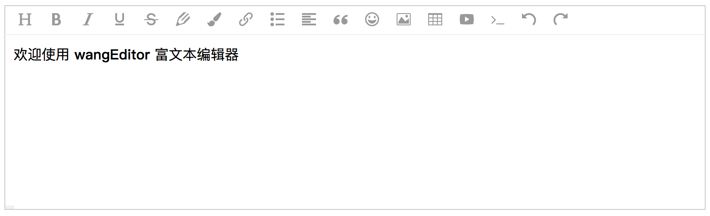

1. 介绍
wangEditor —— 轻量级 web 富文本编辑器，配置方便，使用简单。
- 官网：www.wangEditor.com
- 文档：www.wangEditor.com/doc
- 源码：github.com/wangeditor-team/wangEditor （欢迎 star）

2. 基本使用
npm 安装 npm i wangeditor --save ，几行代码即可创建一个编辑器
import E from 'wangeditor'
const editor = new E('#div1')
editor.create()
3. 交流
加入 QQ 群
- 164999061（人已满）
- 710646022
提交 bug 或建议
- github issues 提交问题
4. 开发人员
（列出所有开发人员）